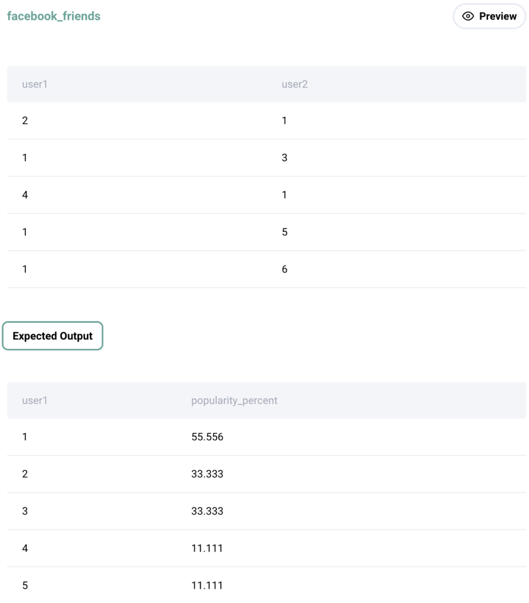

Question sourced from StrataScratch.com.
Database: MySQL
Find the popularity percentage for each user on Meta/Facebook. The popularity percentage is defined as the total number of friends the user has divided by the total number of users on the platform, then converted into a percentage by multiplying by 100.
Output each user along with their popularity percentage. Order records in ascending order by user id.
The 'user1' and 'user2' column are pairs of friends.

/*
My strategy: Since each row in the facebook_friends table represents
a pair of two users that are friends, it could be the case that a
user in the first column never appears in the second column (and vice-
versa). In order to account for all appearances of a given user in
both columns, derive a single column result set where all values in
the second column are vertically appended to the first column (using
the UNION ALL operator). Wrap this result set in a CTE, then group
by user, deriving their percentage popularity by dividing the count
of their rows in the CTE (i.e. their total friends) by the total
number of users. Assuming that there are no user numbers skipped
(meaning the user number is sequential, like a primary key), the
total number of users can be found by getting the MAX user number.
*/
WITH friendship_list AS (
SELECT user1 AS user_id
FROM facebook_friends
UNION ALL
SELECT user2
FROM facebook_friends
)
SELECT user_id,
COUNT(*) / (MAX(user_id) OVER()) * 100 AS percent_popularity
FROM friendship_list
GROUP BY user_id
ORDER BY user_id;